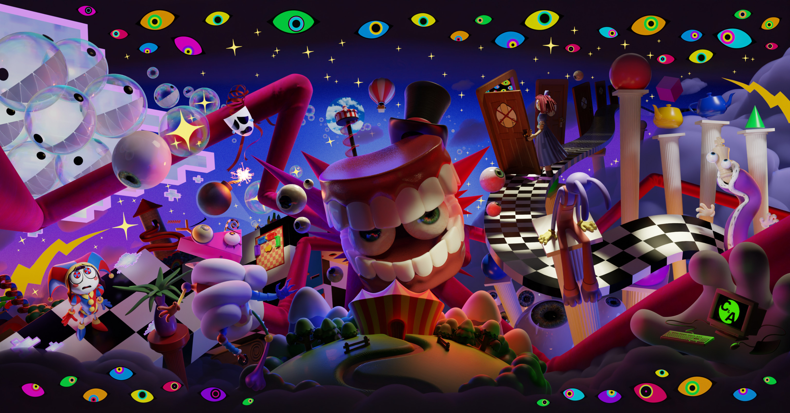
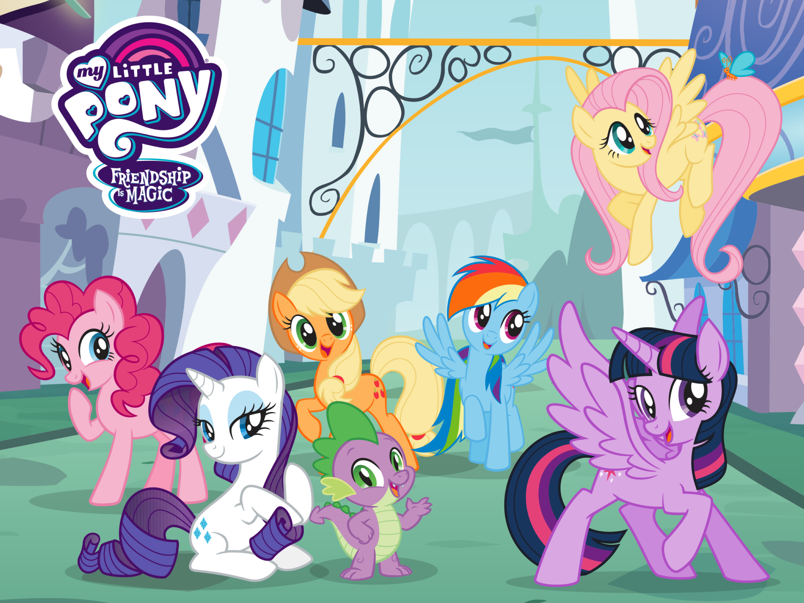
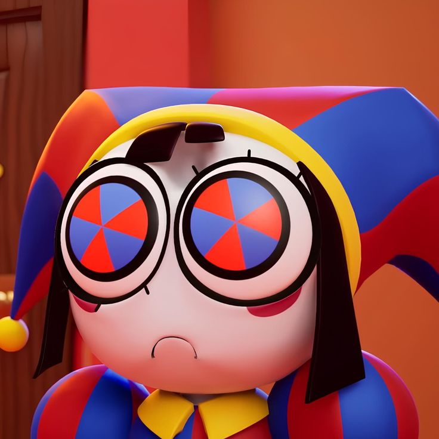
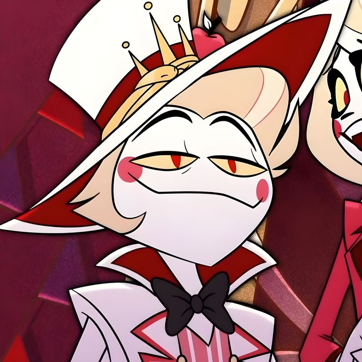

Shows

The Amazing Digital Circus
The Amazing Digital Circus is an Australian-American computer-animated comedy web series created by YouTube animator and composer Gooseworx and produced by independent animation company Glitch Productions. I really love TADC for it's abstract plot of the characters being trapped inside of a digital world. The characters are relatable in terms of their desperation to escape and acceptance of the digital world. The episodes explore the circus' world, how it works, and how the characters live their life in the digital world. It's filled with colorful elements covering it's psychological horror elements.

Hazbin Hotel
Hazbin Hotel is a bit controversial due to it's controversial themes and fandom. However, I simply just love its plot while it is kind of poorly written. Hazbin hotel is about a Princess of Hell, finding a solution to the yearly extermination of hell's sinner residents by heaven's order to reduce the population due to a 'threat' of an uprising against heaven. The characters are poorly written but I love the characters for it's complexity even tho of its poor execution, the characters problems resonate with me and I've been following the development of the show even before the pilot came out, the development inspired me to do more art and try out animations making the show be in a soft spot for me"

My Little Pony: Friendship is Magic
The ponies discover that they represent different facets of friendship, with powerful magical artifacts known as Elements of Harmony. They go on adventures and help others in and around Equestria, solving both interpersonal issues between them, and defeat destructive threats to both Equestria and the wider world. The show was one of my favorites growing up because of its friendship theme, making me long for a friendship like the ponies in the show.
Characters

Pomni from The Amazing Digital Circus
Pomni is my favorite character in the franchise, I even have an offical Pomni Plushie because of how much I love her. Her character heavily resonates with me as we have the same personality. She's basically me as a cartoon character.

Lucifer from Hazbin Hotel
Lucifer, despite his biblical counterpart, he is far from it. I love him due to his complex personality towards the main character. He has his doubts on his daugther's plans to solve the overpopulation in hell. In the show, it shows that he was frowned upon back at heaven, and only longed for the humans in the show to have their own autonomous freedom as he disagreed with the heaven's plan and fell in love with a human girl named Lilith. But, his actions brought sin making him despise humans for their decisions to sin. He feels regret and he doesn't want his daughter experience what he had experienced back in heaven.